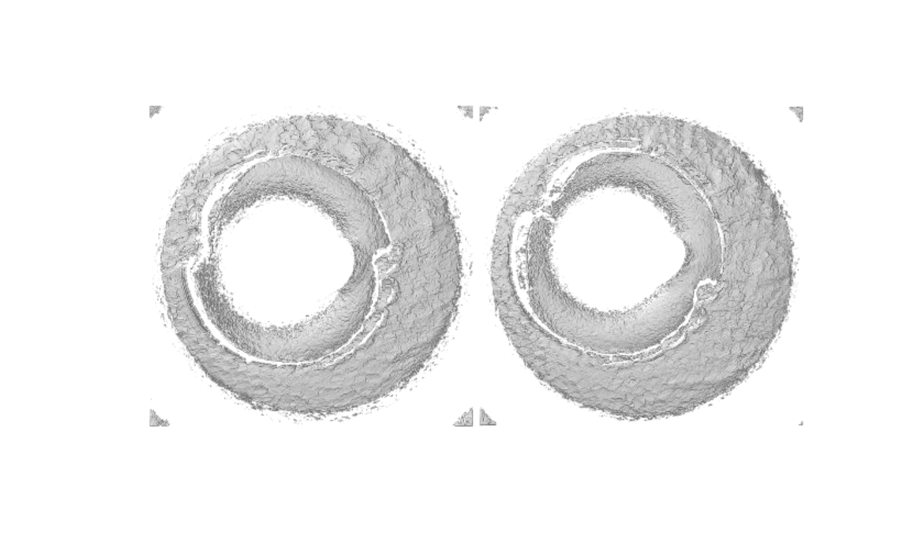
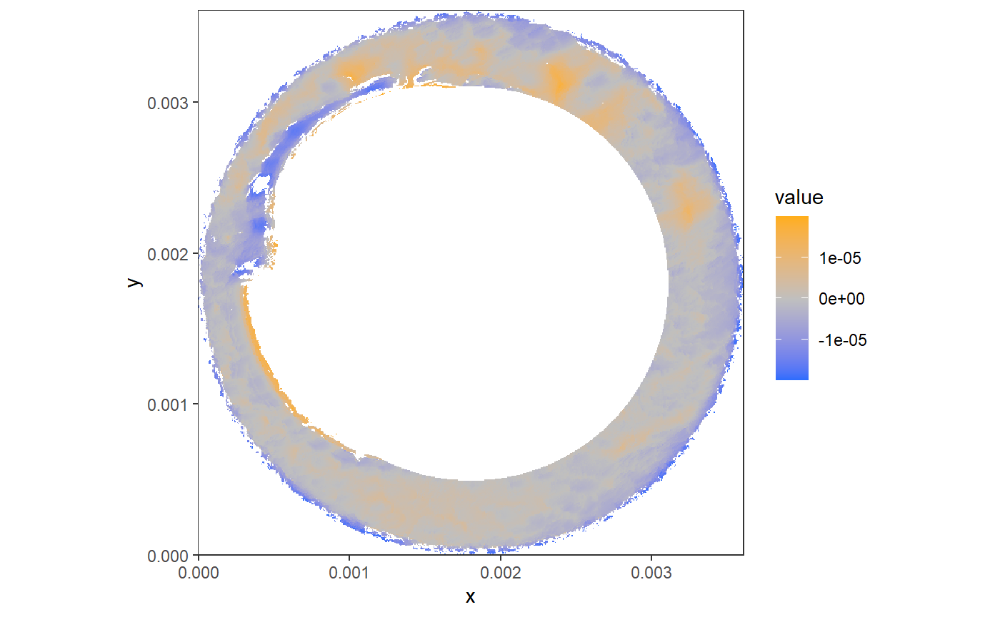
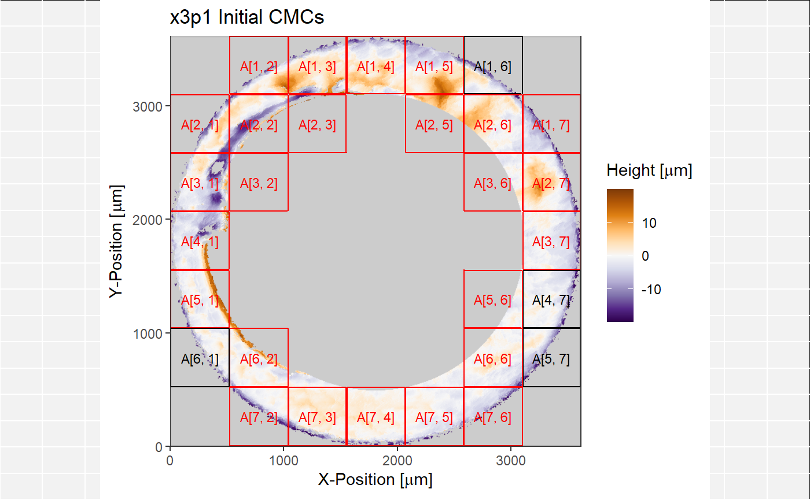

Reproduction of published plots using the cmcR package
cmcR_plotReproduction.RmdThis vignette will give R code to reproduce (at least qualitatively if not precisely) plots commonly given in CMC literature using the cmcR package.
## Set-up
For the sake of the vignette, we will only consider comparisons between two known match pairs. So there will be two known match comparisons and four known non-match comparisons.
The four cartridge cases are from Fadul et al. (2011). The data are openly available from the NIST Ballistics Toolmark Research Database. Specifically, we will consider the known match pairings between “Fadul 1-1” and “Fadul 1-2” (available here) and between “Fadul 2-1” and “Fadul 2-2” (available here).
The pseudocode below shows how you can read an x3p file into R and perform the necessary pre-processing procedures on the surface matrix therein before applying the CMC method. Note that the package defaults (as of 4/13/20) are to perform the following:
Downsample the surface matrix by a factor of 4 (i.e., sample every other row/column from the surface matrix)
Identify the breech face impression height value in the surface matrix using the RANSAC (Random Sample Consensus method).
Take the residuals between the RANSAC-fitted plane and the observed values in the surface matrix within a small
finalSelectionThreshthreshold.Remove rows/columns on the exterior of the resulting breech face impression surface matrix.
Detect and remove any observations within the firing pin impression circle on the interior of the breech face impression surface matrix.
Apply a Gaussian bandpass filter to the resulting surface matrix with wavelength cutoffs 16 and 250 microns \((\mu m)\).
This is all done within the selectBFImpression_sample_x3p function. See the documentation for this function for more information. Note that the RANSAC method relies on randomly sampling points from the surface matrix. Thus results have been seen to vary, albeit slightly, between applications. Thus, a seed is set for reproducibility purposes.
library(cmcR)
library(tidyverse)
library(imager)
set.seed(4132020)
fadul1.1 <- cmcR::selectBFImpression_sample_x3p("path/to/Fadul 1-1.x3p")
fadul1.2 <- cmcR::selectBFImpression_sample_x3p("path/to/Fadul 1-2.x3p")
fadul2.1 <- cmcR::selectBFImpression_sample_x3p("path/to/Fadul 2-1.x3p")
fadul2.2 <- cmcR::selectBFImpression_sample_x3p("path/to/Fadul 2-2.x3p")The cartridge cases after pre-processing can be visualized quickly by first converting the surface matrices into the imager package’s datatype cimg. The base plot function interacts fairly well with cimg objects.
par(mar = c(1,1,1,1))
imlist("Fadul 1-1" = as.cimg(fadul1.1$x3p$surface.matrix),
"Fadul 1-2" = as.cimg(fadul1.2$x3p$surface.matrix),
"Fadul 2-1" = as.cimg(fadul2.1$x3p$surface.matrix),
"Fadul 2-2" = as.cimg(fadul2.2$x3p$surface.matrix)) %>%
plot()Now the cartridge cases are ready to be compared. This is done below using the cellCCF_bothDirections function for each KM and KNM pairing (so 6 in total). Note that we are considering the rangle of rotation values from -30 to 30 degrees and using a grid of 8 by 8 cells. The code here is written in a way to be at least somewhat generalizable (e.g., using the purrr::map family) if the reader is interested in applying the method to a larger set of cartridge cases.
kmPairs <- list("1.1_1.2" = list(fadul1.1$x3p,fadul1.2$x3p),
"2.1_2.2" = list(fadul2.1$x3p,fadul2.2$x3p))
knmPairs <- list("1.1_2.1" = list(fadul1.1$x3p,fadul2.1$x3p),
"1.1_2.2" = list(fadul1.1$x3p,fadul2.2$x3p),
"1.2_2.1" = list(fadul1.2$x3p,fadul2.1$x3p),
"1.2_2.2" = list(fadul1.2$x3p,fadul2.2$x3p))
kmComparisons <- kmPairs %>%
map(~ cmcR::cellCCF_bothDirections(.[[1]],.[[2]],
thetas = seq(-30,30,by = 3),
cellNumHoriz = 8))
knmComparisons <- knmPairs %>%
map(~ cmcR::cellCCF_bothDirections(.[[1]],.[[2]],
thetas = seq(-30,30,by = 3),
cellNumHoriz = 8))With the comparisons completed, we can now show how to reproduce a variety of plots commonly given in the CMC literature.
CMC-\(\theta\) distribution
Tong et al. (2015) discusses an improvement to the CMC method originally proposed by Song (2013). Figures 2 and 3 of Tong et al. (2015) show how the CMC count varies across a variety of rotation values for a known match pair and a known non-match pair of cartridges cases, respectively. For a truly matching pair of cartridge cases, this “CMC-\(\theta\) distribution” tends to attain a mode around the rotation value that correctly aligns one to the other. This tendency can be used to determine, for example, if comparing one cartridge case scan to another in one “direction” yields a CMC-\(\theta\) mode that agrees the comparison in the other direction up to a sign.
The plot below illustrates this by showing the CMC-\(\theta\) for the known match Fadul 1-1 and Fadul 1-2 pair. The cmcPerThetaBarPlot function is used to construct the plot. Comparing Fadul 1-1 to Fadul 1-2 (i.e., Fadul 1-1 is partitioned into a grid of cells and compared to larger regions in Fadul 1-2) clearly yields a CMC-\(\theta\) mode around -24 degrees (i.e., Fadul 1-2 should be rotated -24 degrees to align with Fadul 1-1). In the other direction, we see that comparing Fadul 1-2 to Fadul 1-1 yields a CMC-\(\theta\) mode around 21, which indicates that both directions agree (at least within a tolerance of, say, 3 degrees).
The way that Tong et al. propose to identify modes in the CMC-\(\theta\) distribution is to introduce a “high CMC” threshold equal to the max CMC count minus some constant. That is, \(CMC_{\text{high}} = CMC_{\max} - \tau\) for some \(\tau\). Using this high CMC threshold, we can determine how spread out the high CMC \(\theta\) values are; the motivation here being that excessively diffuse high CMC \(\theta\) values indicate that little “consensus” is reached as to the correct \(\theta\) rotation value and the cartridge case pair under consideration is likely not a match.
cmcR::cmcPerThetaBarPlot(kmComparisons$`1.1_1.2`,
ccf_thresh = .6,
dx_thresh = 10,
highCMCThresh = 1)
In contrast, we can see the CMC-\(\theta\) distribution for the known non-match pair of Fadul 1-1 and Fadul 2-1. Following the high CMC criterion discussed above, we can see that the range of \(\theta\) values that we would classify as having a high CMC count is rather spread out (-18 to 3 degrees in one direction vs. -12 to 21 degrees in the other). Thus, we would conclude that this cartridge case pair is likely not a match.
cmcR::cmcPerThetaBarPlot(knmComparisons$`1.1_2.1`,
ccf_thresh = .6,
dx_thresh = 10,
highCMCThresh = 1)
CCF Map
We may be interested in learning more about a particular comparison that was done between a pair of cartridge case scans. For example, as discussed above it appears that Fadul 1-1 and Fadul 1-2 align well for a rotation of 24 degrees (-24 depending on the direction). We may be interested in what the cell/region pairs looked like just before the CCF was computed. The getCellRegionPairs function will take a data frame of CCF results, such as the one associated with the comparison after Fadul 1-2 is rotated -24 degrees, and return each cell/region pair represented in that data frame. For brevity, we’ll just consider as examples the Fadul 1-1 and Fadul 1-2 comparison as well as the Fadul 1-1 and Fadul 2-1 comparison.
kmCellRegionPairs <- cmcR::getCellRegionPairs(x3p1 = fadul1.1$x3p,
x3p2 = fadul1.2$x3p,
ccfDF = kmComparisons$`1.1_1.2`$comparison_1to2$ccfResults$`-24`,
params = kmComparisons$`1.1_1.2`$comparison_1to2$params)
knmCellRegionPairs <- cmcR::getCellRegionPairs(x3p1 = fadul1.1$x3p,
x3p2 = fadul2.1$x3p,
ccfDF = knmComparisons$`1.1_2.1`$comparison_1to2$ccfResults$`-9`,
params = knmComparisons$`1.1_2.1`$comparison_1to2$params)Figures 4 and 5 in Tong et al. (2015) show examples of “CCF maps,” as they are aptly called, for a known match cell/region pair and a known non-match cell/region pair, respectively. These “maps” are actually just the 3-dimensional cross-correlation function surface. They are referred as maps because they indicate what the CCF is for various translation values of one surface matrix compared to the other. The coordinates at which the CCF achieves a maximum can be used as estimates of the “true” translation values at which a particular cell aligns best to its associated region. The ccfMapPlot function plots the CCF where function values are mapped to color. Additionally, the function will plot the cell/region pair for which the CCF map was determined. An orange square will be plotted on the region that visually indicates where the CCF “believes” the correct translation of the cell to be relative to the region. The plot below shows a particular cell/region pair and its associated CCF map from the known match comparison of Fadul 1-1 vs. Fadul 1-2. Note that the CCF max value is actually rather small in this instance. This is an artifact of how the CCF method is calculated using a Fast Fourier Transform technique. Effectively, any NA values in the scan, of which there are many, must be replaced prior to calculation of the CCF using FFTs. This often causes the CCF to be “deflated” relative the “true” CCF values.

#> $`x = 435 - 506,y = 146 - 217`
#> NULLIn contrast, the plot below shows a particular cell/region pair and its associated CCF map from the known non-match comparison of Fadul 1-1 vs. Fadul 2-1.

#> $`x = 435 - 506,y = 363 - 434`
#> NULL\(CCF_\max\) distribution
Figure 4 of Tong et al. (2014) and Figure 5(a) of Chen et al. (2017)
ggplot() +
geom_histogram(data = kmComparisons %>%
map2_dfr(.x = .,
.y = names(.),
~ cmcR::topResultsPerCell(.x$comparison_1to2$ccfResults) %>%
ungroup() %>%
mutate(pair = rep(.y,times = nrow(.)))),
aes(x = ccf,y = ..density..),
fill = "orange",
alpha = .7,
binwidth = .03) +
geom_histogram(data = knmComparisons %>%
map2_dfr(.x = .,
.y = names(.),
~ cmcR::topResultsPerCell(.x$comparison_1to2$ccfResults) %>%
ungroup() %>%
mutate(pair = rep(.y,times = nrow(.)))),
aes(x = ccf,y = ..density..),
fill = "royalblue",
alpha = .7,
binwidth = .03) +
geom_bar(data = data.frame(x = c(.5,.5),
y = c(0,0),
comparisonType = c("known non-match","known match")),
aes(x = x,y = y,fill = comparisonType),stat = "identity",
alpha = .7) +
scale_fill_manual(values = c("orange","royalblue")) +
theme_bw() +
xlim(c(0,1))
#> Warning: Removed 2 rows containing missing values (geom_bar).
#> Warning: Removed 2 rows containing missing values (geom_bar).
bind_rows(kmComparisons %>%
map2_dfr(.x = .,
.y = names(.),
~ cmcR::topResultsPerCell(.x$comparison_1to2$ccfResults) %>%
ungroup() %>%
mutate(pair = rep(.y,times = nrow(.)),
comparisonType = "known match")),
knmComparisons %>%
map2_dfr(.x = .,
.y = names(.),
~ cmcR::topResultsPerCell(.x$comparison_1to2$ccfResults) %>%
ungroup() %>%
mutate(pair = rep(.y,times = nrow(.)),
comparisonType = "known non-match"))) %>%
ggplot(aes(x = ccf,fill = comparisonType)) +
geom_density(alpha = .5) +
theme_bw() +
scale_fill_manual(values = c("orange","royalblue")) +
xlim(c(0,1))Identified CMCs
Figure 7 of Tong et al. (2015)
kmCMCs <- kmComparisons %>%
map(~ cmcR::cmcFilter_improved(cellCCF_bothDirections_output = .,
consensus_function = median,
ccf_thresh = .6,
dx_thresh = 10,
theta_thresh = 3))
knmCMCs <- knmComparisons %>%
map(~ cmcR::cmcFilter_improved(cellCCF_bothDirections_output = .,
consensus_function = median,
ccf_thresh = .6,
dx_thresh = 10,
theta_thresh = 3))
cmcR::cmcPlot(x3p = fadul1.1$x3p,
cmcDF = kmCMCs$`1.1_1.2`$finalCMCs)
CMC Distribution
Figure 7 of Tong et al. (2014), Figure 9 of Tong et al. (2015), and Figure 6 of Chen et al. (2017)
bind_rows(kmCMCs %>%
map2_dfr(.x = .,
.y = names(.),
~ .$finalCMCs %>%
mutate(pair = rep(.y,times = nrow(.)),
comparisonType = "known match")),
knmCMCs %>%
map2_dfr(.x = .,
.y = names(.),
function(cmcs = .x,name = .y){
if(!is.null(cmcs$finalCMCs)){
return(cmcs$finalCMCs %>%
mutate(pair = rep(name,times = nrow(.)),
comparisonType = "known non-match"))
}
else{
cmcs$initialCMCs[[1]][[which.min(c(nrow(cmcs$initialCMCs[[1]]$comparison_1to2),nrow(cmcs$initialCMCs[[1]]$comparison_2to1)))]] %>%
mutate(pair = rep(name,times = nrow(.)),
comparisonType = "known non-match") %>%
return()
}
})) %>%
group_by(pair,comparisonType) %>%
tally() %>%
ggplot(aes(x = n,fill = comparisonType)) +
geom_histogram(binwidth = 1) +
theme_bw() +
scale_fill_manual(values = c("orange","royalblue"))
References
Song, J. (2013). Proposed “NIST Ballistics Identification System (NBIS)” Based on 3D Topogra-phy Measurements on Correlation Cells.American Firearm and Tool Mark Examiners Journal,45(2):11.
Tong, M., Song, J., and Chu, W. (2015). An Improved Algorithm of Congruent Matching Cells(CMC) Method for Firearm Evidence Identifications.Journal of Research of the National Institute of Standards and Technology, 120:102.
Fadul T., Hernandez G., Stoiloff S. and Gulati Sneh “An Empirical Study to Improve the Scientific Foundation of Forensic Firearm and Tool Mark Identification Utilizing 10 Consecutively Manufactured Slides,” 2011 NCJRS 237960